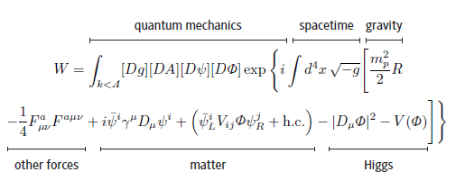

It is important to remember that, according to evolutionary psychology, the only reason that we humans have any preferences at all is because we are the solution to an evolutionary optmization problem- Max Tegmark
One approach is to data mine all human records and behavior to determine these values:
There are reasons for optimism. One reason is, there is a massive amount of data. Because remember — I said they’re [the AIs] going to read everything the human race has ever written. Most of what we write about is human beings doing things and other people getting upset about it. So there’s a massive amount of data to learn from.Stuart RussellAnd Leavespace for uncertainty:
Three simple ideas:But:
- The robot’s only objective is to maximize the realization of human values
- The robot is initially uncertain about what those values are
- The best source of information about human values is human behavior
Humans are nasty, irrational, inconsistent, weak-willed, computationally limited, and heterogeneous Stuart Russell
I would like to say that I really enjoy Max Tegmark’s general frame of you leaving this mathematical universe. One re-frame of what we were just talking about in these terms are there are patterns which have to do with identity and have to do with valence and have to do with many other things. The grand goal is to understand what makes a pattern good or bad and optimize our light cone for those sorts of patterns. - futureoflife.org
Our Mathematical Universe - Max Tegmark
See also Why Is There Something, Rather Than Nothing?The Standard Model of particle physics (SM) and theory of General Relativity (GR) form the basic pillars of modern physics. Together they can describe almost all phenomena observed in nature [1] in terms of a small number of underlying principles - general covariance, gauge invariance and quantum mechanics - and a handful of numbers. All elementary particles we have observed to date can be understood as fundamental excitations of a few quantum fields, the properties of which are constrained by the local structure of space and time. Interactions between them are the result of (gauge) symmetries of the Lagrangian.
In spite of its enormous success, this cannot be a complete theory of nature for two reasons. On one hand, it treats gravitational fields as a classical background, while matter and other interactions are described by quantum field theory in the SM. This approximation certainly becomes invalid and has to be extended to a theory of quantum gravity at energies near the Planck scale M_p = 1.22 x 10^19 GeV.
[1] The basic laws of other areas of natural science and technology can be understood as effective theories, which in principle can be derived from the SM and GR. Though there exist many complex phenomena that we do not understand or cannot predict in detail, this lack of predictivity is almost certainly related to the complexity of the system rather than a lack of understanding of its basic components, the elementary quantum fields.
- https://arxiv.org/pdf/1303.6912.pdf
Quantum Mechanics gives us a probability (amplitude) for transition between (4-dimensional field) states, acccording to a equation like:

The Big Picture - Sean Carroll
This book also spans philosophical topics such as knowledge, the universe, physical laws, origin and meaning of life
We can ask: if consciousness is reducible to computation, then what kinds of computation suffice to bring about consciousness? What if each person on earth simulated one neuron in your brain, communicating by passing little slips of paper around? Does it matter if they do it really fast?
Or what if we built a gigantic lookup table that hard-coded your responses in every possible interaction of at most, say, 5 minutes? Would that bring about your consciousness? Does it matter that such a lookup table couldn’t fit in the observable universe? Would it matter if anyone actually consulted the table, or could it just sit there, silently effecting your consciousness? For what matter, what difference does it make if the lookup table physically exists— why isn’t its abstract mathematical existence enough? (Of course, all the way at the bottom of this slippery slope is Max Tegmark, ready to welcome you to his mathematical multiverse!)
Scott Aaronson - The Ghost in the Quantum Turing Machine
"Optimize our light cone" would mean ( according to many-worlds interpretation of quantum mechanics) maximize the weight of good-outcome wavefunction branches.
Yet, as the Schrödinger equation is deterministic - these probabilities are fixed given the present state of the universe - this raises issues about free-will.
Moreover, as in quantum mechanics 'Everything not forbidden is compulsory', everythng (allowed by conservation laws) happens (all the time) with some weight in some branch of the wavefunction . For example your litter tunneling to gold, or the universe tunelling to a maximally (un)happy state - to our (un)lucky future selves that are on that 1 in 10-10120 branch.To posit that our cerebral cortexes can know all possible emotional and intellectual experiences would seem preposterous (see Oxford’s Nick Bostrom explain the further experiences humanity might attain in his famous 2005 TED talk). (...) Apes don’t seem remotely capable of grasping human poetry, humor, politics, or morality – what are the future possibilities of intelligent sentience that we cannot presently imagine? It seems plausible that there are thousands of senses outside the petty five that humans now have access to (io9 – limitations of human sensory perception), and an “enhanced” entity might experience them all. It seems likely that a sentience (either man-made or built from an enhanced human mind) a thousand times more powerful than that of humans would conceive of moral dictates and understand the world in ways far beyond anything that present mortals could imagine. Such an entity would grasp meagre notions of “beauty” or “relationship” or “happiness” at such different and potentially deeper levels than we can presently fathom that it is hardly worth prognosticating. https://danfaggella.com
Now, why is that a good thing to do? Well, we know already that in this little human circle there, there are these enormously wonderful and worthwhile modes of being -- human life at its best is wonderful. We have no reason to believe that within this much, much larger space there would not also be extremely worthwhile modes of being, perhaps ones that would be way beyond our wildest ability even to imagine or dream about. And so, to fix this third problem, I think we need -- slowly, carefully, with ethical wisdom and constraint -- develop the means that enable us to go out in this larger space and explore it and find the great values that might hide there. nick_bostrom TED 2015
Put in another way, our morality evolved in a hunter-gatherer past, and most of configurations of particles that we can put the universe into are conpletely alien to us.
Problem: how to order these posssible configurations of particles of the universe from "best" to "worst".
.